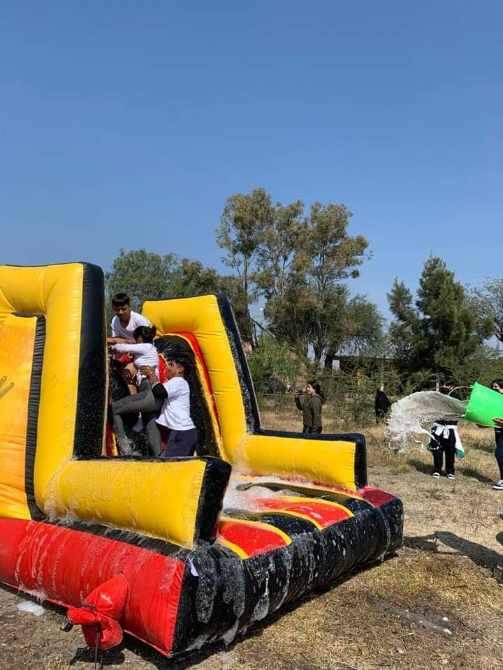

Eventos Destacados
Dia de la Mujer

Fecha: 08 de Marzo de 2024
Descripción: Únete a nosotros en el dia de la mujer donde los estudiantes se expresan mediante fraces, dibujos,etc.
Festival de Música

Fecha: 22 de Marzo de 2024
Descripción: Disfruta de los talentos de nuestros estudiantes.
Competencia Deportiva
Fecha: 08 de Mayo a 07 de Junio del 2024
Descripción: Las alumnas de nuestra institucion educativa participaron en un torneo de Futbol en los cuales se enfrentaron contra otras Preparatorias de la zona.
Cbtatlon
Fecha:04 de Noviembre
Descripción: Cada año se acostumbra a llevar acabo un cbtatlon en el campo depotivo de nuestras instalaciones donde los y las estudiantes participan con mucha alegria y entusiasmo.